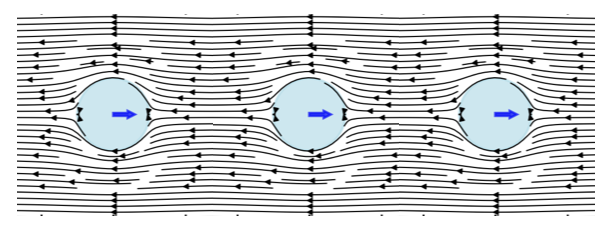
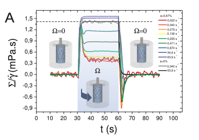
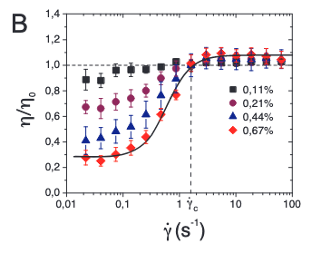
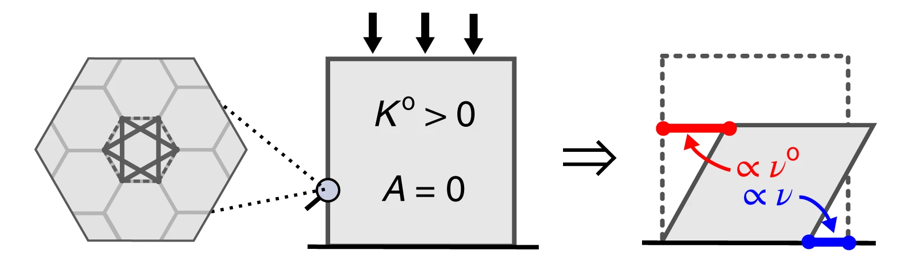
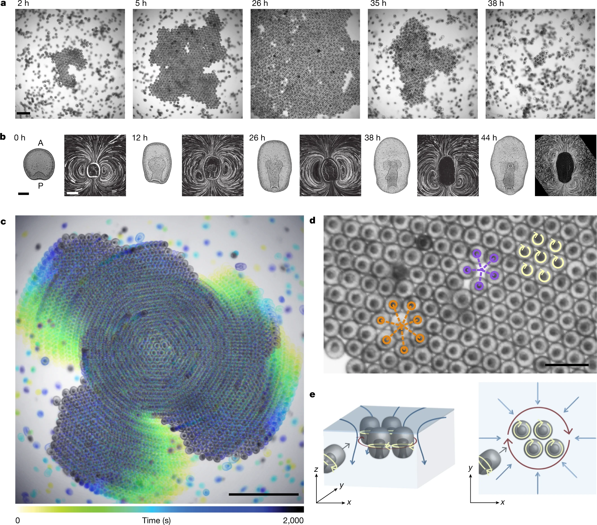
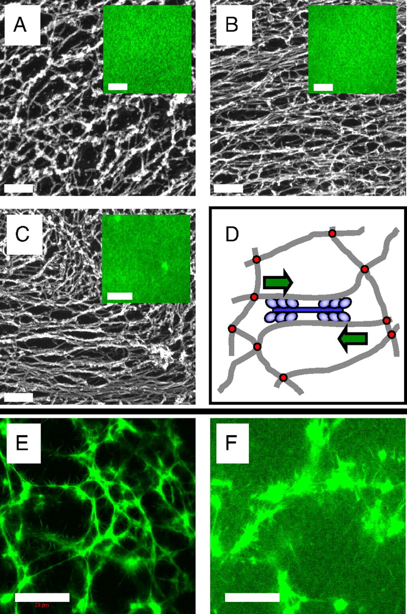
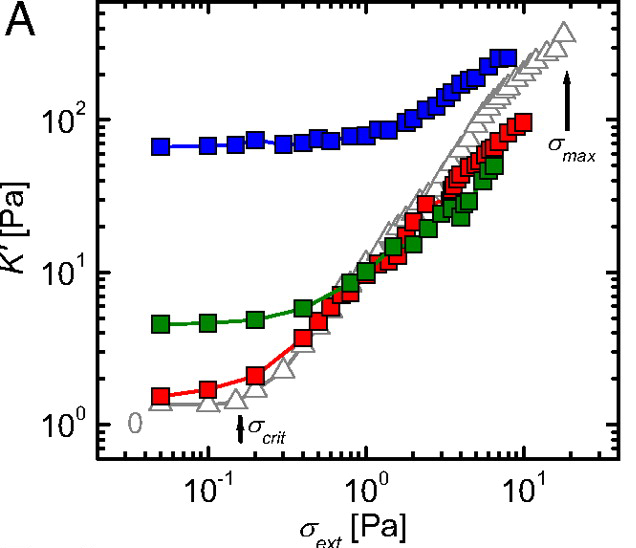

Mechanical Properties of Active Materials
In previous lectures, we explored how active particles self-organize into collective states—from the flocking patterns described by the Vicsek and Toner-Tu models, to the complex flows of active nematics, and the density segregation in motility-induced phase separation (MIPS). These models revealed how microscopic activity drives macroscopic order through symmetry breaking and phase transitions. Now we shift our focus from collective motion patterns to a complementary aspect of active matter: how activity fundamentally alters the mechanical properties of materials themselves.
While our earlier discussions centered on emergent collective behaviors—birds flocking, bacteria swarming, or liquid crystals flowing—this lecture examines how the same principles of energy injection and force generation create materials with mechanical properties impossible in equilibrium systems. The key insight is that activity doesn’t just organize particles into patterns; it transforms how materials respond to stress, transmit forces, and maintain their structural integrity.
Consider the distinction: in the Vicsek model, we asked “how do active particles coordinate their motion?” Here we ask “what happens when active components are embedded in or constitute a material?” The answer reveals surprising phenomena—materials that stiffen under their own internal forces like contracting muscles, systems that can switch between solid and liquid states on demand, and structures that violate fundamental symmetries of passive mechanics. We’ll explore these mechanical signatures of activity, building on the non-equilibrium concepts from our earlier models while focusing specifically on stress, strain, elasticity, and the other quantities that define a material’s mechanical character.
Active Stresses and Force Transmission
Origins and Mathematical Description of Active Stresses
Active stresses emerge from internal energy conversion processes (chemical, light, electric/magnetic fields, or mechanical), distinguishing them from passive stresses which merely result from external loading and thermal fluctuations. At the microscopic level, we can understand active stress generation through the Active Brownian Particle (ABP) model introduced in Lecture 3, where particles self-propel with constant speed v₀ in a direction undergoing rotational diffusion:
\[\dot{\mathbf{r}} = v_0 \mathbf{n} + \sqrt{2D_T}\boldsymbol{\eta}(t)\] \[\dot{\mathbf{n}} = \sqrt{2D_R}\boldsymbol{\xi}(t) \times \mathbf{n}\]
where \(\mathbf{r}\) is position, \(\mathbf{n}\) is orientation, \(D_T\) and \(D_R\) are translational and rotational diffusion coefficients, and \(\boldsymbol{\eta}(t)\) and \(\boldsymbol{\xi}(t)\) are Gaussian white noise terms. The persistent motion characterized by length \(l_p = v_0/D_R\) distinguishes this from equilibrium Brownian motion.

ABPs propel because of friction, not against it. When encountering obstacles, they continue applying propulsive force, generating fluid flows that create stresses in the surrounding medium. These microscopic stresses propagate through the system via fluid flow patterns around particles, pressure gradients, hydrodynamic interactions between particles, and elastic deformations in solid or viscoelastic media. Collectively, these mechanisms generate the macroscopic active stress tensor:
\[\sigma_{ij}^{active} = -\zeta \Delta \mu \int \mathbf{n}_i \mathbf{n}_j c(\mathbf{r}, \mathbf{n}) d\mathbf{n}\]
where \(c(\mathbf{r}, \mathbf{n})\) is the particle distribution and \(\zeta \Delta \mu\) represents self-propulsion strength. The negative sign indicates most ABPs are “pushers” generating extensile stresses along their motion direction.
To describe active stresses more generally in a material, we need to use tensors, which are mathematical objects that represent forces acting in different directions.
The active stress tensor can be written as:
\[\sigma_{ij}^{active} = \alpha c(r,t) Q_{ij}(r,t)\]
This equation has three important parts:
- \(\alpha\) is the activity parameter (how strongly the active components generate force)
- \(c(r,t)\) is the concentration of active components at position \(r\) and time \(t\)
- \(Q_{ij}(r,t)\) is the order parameter tensor, which describes how the active units are oriented
For the simplest case where active particles don’t have a preferred direction (isotropic case), the stress takes a simpler form: \[\sigma_{ij}^{active} = -\zeta \Delta \mu c(r,t) \delta_{ij}\]
Here, \(\zeta \Delta \mu\) represents how strongly each active unit generates force, and \(\delta_{ij}\) is the identity tensor (forces are equal in all directions).
The key takeaway is that active stresses:
- Are proportional to the concentration of active components
- Depend on how those components are organized and oriented
- Convert chemical energy (\(\Delta \mu\)) into mechanical forces
A simple example is a swarm of bacteria in a fluid - each bacterium exerts small forces, and together they can generate significant stresses that affect the overall mechanical properties of the system.
Experimental evidence supports this theoretical framework. Recent studies have directly measured local stresses in active particle systems. For example, work on “Local stress and pressure in an inhomogeneous system of spherical active Brownian particles” has shown that ABPs generate measurable mechanical stresses that depend on particle activity and local density. The transmission efficiency depends on the surrounding medium’s properties—forces dissipate quickly in viscous fluids but propagate farther in elastic networks. While Takatori, S. C., & Brady, J. F. (2016) in “Towards a thermodynamics of active matter” published in Physical Review E focused on developing a thermodynamic framework for active systems, related experimental work has confirmed that microscopic activity creates non-equilibrium stresses. Similarly, studies of active polymers, such as Harder, J., Valeriani, C., & Cacciuto, A. (2014) in “Activity-induced collapse and reexpansion of rigid polymers” published in Physical Review E, have shown how activity modifies polymer conformations and effective interactions. These studies collectively demonstrate that persistent self-propulsion breaks detailed balance at the microscopic scale, driving the system away from equilibrium and generating mechanical stresses that propagate through the material.
Force Transmission Pathways
Once active stresses are generated at the microscopic scale, their transmission through the material determines the macroscopic mechanical response. While the detailed hydrodynamics of force transmission in active fluids like active nematics was covered in Lecture 8, here we focus on the general principles that apply across different types of active materials.
Key Principles of Force Propagation
The fundamental force balance equation with active contributions is:
\[\nabla \cdot (\sigma^{passive} + \sigma^{active}) + \mathbf{f}^{ext} = \rho \frac{\partial^2 \mathbf{u}}{\partial t^2}\]
where \(\sigma^{passive}\) is the passive stress tensor, \(\sigma^{active}\) is the active stress contribution, \(\mathbf{f}^{ext}\) represents external body forces, and \(\mathbf{u}\) is the displacement field.
The transmission mechanisms vary significantly across material types:
- Viscous fluids: Forces decay slowly (\(\sim 1/r\)) through hydrodynamic interactions
- Elastic solids: Localized active stresses create displacement fields that decay as \(\sim 1/r^3\)
- Granular materials: Forces transmit through discrete contact networks with exponential probability distributions
The key insight is that activity modifies these transmission pathways, often enhancing the range and efficiency of force propagation compared to passive systems.
Enhanced Long-Range Force Transmission
A remarkable feature of active materials is their ability to transmit forces over longer distances than passive materials. To understand this, let’s first think about how forces typically decay in materials.
In most materials, when you apply a force at one point, its effect weakens as you move away from that point. Think of pressing your finger into a soft gel - the deformation is strongest right under your finger and gets smaller farther away. The characteristic distance over which forces remain significant is called the “screening length.” Beyond this distance, the force effect becomes negligible.
This enhancement in active materials arises through several mechanisms:
Modified Screening Lengths: In ordinary viscoelastic materials (materials that are part solid, part liquid-like), forces decay over a characteristic distance called the screening length: \[\ell_{screen} = \sqrt{\eta/G}\] where \(\eta\) is viscosity (resistance to flow) and \(G\) is the elastic modulus (stiffness).
In active materials, the activity effectively adds to the viscosity, increasing this screening length: \[\ell_{screen}^{active} = \sqrt{(\eta + \eta_{active})/G}\]
This means forces can “reach” farther in active materials - like having a louder voice that carries across a larger room.
Collective Effects and Bacterial Superfluidity: Active particles generate correlated flow fields and stresses that couple their motion over distances larger than individual particle sizes. A striking example is bacterial superfluidity - when bacterial suspensions become dense enough, they can exhibit a dramatic reduction in viscosity, sometimes approaching zero or even becoming negative. This counterintuitive behavior occurs because the bacteria’s swimming motion collectively reduces the resistance to flow, allowing forces to propagate with minimal dissipation.
In superfluid bacterial suspensions, the effective viscosity can be written as: \[\eta_{eff} = \eta_0(1 - \alpha n v_0)\]
where \(\eta_0\) is the viscosity of the suspending fluid, \(n\) is the bacterial density, \(v_0\) is the swimming speed, and \(\alpha\) is a coefficient that depends on bacterial shape and swimming mechanism. When \(\alpha n v_0 > 1\), the effective viscosity becomes negative, creating a state where disturbances can actually be amplified rather than damped.


This superfluidity enables force transmission over much larger distances than would be possible in passive fluids - it’s like the difference between shouting through thick honey versus clear air.
- Non-equilibrium Interactions: Activity creates effective long-range interactions between particles that would not exist in equilibrium systems. These are like chain reactions where one particle’s activity triggers nearby particles, which trigger others, extending the range of influence. In bacterial systems approaching superfluidity, these interactions become particularly strong, with collective swimming patterns creating coherent flows that span the entire system.
Experimental evidence for enhanced force transmission includes: - Photoelastic measurements in active granular systems showing dynamic force chains (Deseigne et al., 2010) - these are like “highways” of force that form and reform dynamically - Traction force microscopy revealing long-range stress correlations in active biological tissues - showing that cells can “feel” each other from surprisingly far away - Direct visualization of collective flows in bacterial suspensions with distinct scaling properties - revealing how microscopic swimming creates large-scale fluid flows. Studies by López et al. (2015) demonstrated superfluid-like behavior in E. coli suspensions, with viscosity reductions of up to 90% at high bacterial densities - Measurements of negative viscosity in pusher-type bacterial suspensions (Gachelin et al., 2013), confirming theoretical predictions of bacterial superfluidity
Applications of Force Transmission Properties
The unique force transmission in active materials is driving exciting current research in several directions:
Enhanced Mechanosensing: Active materials can detect and amplify weak mechanical signals through collective response - like having many small sensors work together to detect something that one sensor alone would miss
Adaptive Load Distribution: Dynamic redistribution of stresses to prevent material failure - the material can actively shift loads away from weak points
Long-Range Communication: Mechanical signals can propagate across active materials more effectively than in passive systems - enabling coordination across the entire material
These capabilities are being actively explored in: - Biological systems where cells communicate mechanically across tissues (e.g., how cells coordinate during wound healing) - Synthetic materials designed for sensing and actuation (e.g., smart prosthetics that can feel) - Smart structures that must respond to distributed mechanical inputs (e.g., adaptive building facades)
Fluctuations in Active Systems
Beyond Thermal Fluctuations
Building on the single-particle dynamics of active particles discussed earlier, we now examine how microscopic activity translates into material-level fluctuations that fundamentally alter mechanical properties. While we previously saw how individual active particles exhibit enhanced diffusion and effective temperatures (recall the sedimentation of active particles under gravity), here we focus on how these microscopic behaviors collectively generate unique mechanical fluctuations in bulk active materials.
The key differences between thermal and active fluctuations at the material level are:
- Thermal fluctuations:
- Follow Gaussian statistics in material deformations
- Obey the fluctuation-dissipation theorem linking material response to equilibrium fluctuations
- Scale with temperature uniformly throughout the material
- Active fluctuations:
- Show non-Gaussian statistics in stress and strain fluctuations
- Violate the fluctuation-dissipation theorem, decoupling material response from fluctuation spectra
- Create spatially heterogeneous fluctuations even in homogeneous materials
These enhanced fluctuations manifest as measurable mechanical phenomena. For instance, in active gels containing molecular motors, the local stress fluctuations can be orders of magnitude larger than thermal expectations, driving spontaneous flows and deformations absent in passive materials.
Mechanical Consequences of Active Fluctuations
The effective temperature concept introduced for single active particles extends to describe mechanical fluctuations in active materials, but with important modifications. While an isolated active particle in sedimentation equilibrium experiences a well-defined effective temperature, active materials exhibit mode-dependent effective temperatures that vary with length scale and frequency.
For a viscoelastic material with normal modes \(\{q_n\}\), the equipartition theorem in equilibrium states:
\[\langle q_n^2 \rangle = \frac{k_B T}{k_n}\]
where \(k_n\) is the mode stiffness. In active materials, this becomes:
\[\langle q_n^2 \rangle = \frac{k_B T_\text{eff}(n)}{k_n}\]
The effective temperature \(T_\text{eff}(n)\) now depends on how activity couples to each mechanical mode. Long-wavelength modes typically experience higher effective temperatures, reflecting the collective nature of active forces—similar to how active particle sedimentation profiles differ from Boltzmann distributions at large scales.
This scale-dependent activity manifests in anomalous mechanical fluctuations:
\[\langle |\Delta u(r,t)|^2 \rangle \sim t^\alpha\]
where \(u(r,t)\) is the local displacement field. The exponent \(\alpha > 1\) indicates superdiffusive mechanical fluctuations, contrasting with the subdiffusive behavior (\(\alpha < 1\)) often seen in passive viscoelastic materials.
For those unfamiliar with displacement fields: \(u(r,t)\) represents how much a point at position \(r\) has moved from its original location at time \(t\). The quantity \(\langle |\Delta u(r,t)|^2 \rangle\) measures the mean squared displacement - essentially how far points typically move over time.
The exponent \(\alpha\) tells us about the nature of these fluctuations:
- Normal diffusion (\(\alpha = 1\)): Like ink spreading in water, displacement grows as \(\sqrt{t}\)
- Subdiffusive (\(\alpha < 1\)): Motion is hindered, particles move slower than normal diffusion (common in crowded/constrained systems)
- Superdiffusive (\(\alpha > 1\)): Motion is enhanced, particles move faster than normal diffusion
In passive viscoelastic materials (like polymer gels), particles typically show subdiffusive behavior because they get trapped by the network structure. Active materials show superdiffusive behavior because the energy input drives enhanced motion beyond what thermal fluctuations alone would produce.
These enhanced fluctuations drive mechanical processes impossible in equilibrium. Just as active particles can swim upward against gravity (violating the barometric formula), active materials can spontaneously generate persistent deformations and flows that would require external work in passive systems.
Fluctuation Spectra and Material Response
Active fluctuations affect the frequency-dependent mechanical response of materials:
- Low-frequency enhancement of fluctuations
- Non-equilibrium correlations between stress and strain fluctuations
- Breaking of time-reversal symmetry in mechanical response functions
To understand what makes active materials special, let’s first think about a key symmetry in physics. In passive materials, if you could film their molecular motion and play it backwards, the reversed movie would look physically reasonable - this is called time-reversal symmetry. It’s like watching a pendulum swing: the backwards movie looks just like normal pendulum motion.
Active materials break this symmetry because energy continuously flows through them in one direction. Imagine filming bacteria swimming - if you played it backwards, they’d appear to swim backwards, which doesn’t happen naturally! This broken symmetry has profound consequences for how materials respond to forces.
For passive viscoelastic materials, this symmetry constrains their mechanical properties through mathematical relationships called the Kramers-Kronig relations:
\[G'(\omega) = \frac{2}{\pi}\mathcal{P}\int_0^{\infty} \frac{\omega' G''(\omega')}{\omega'^2 - \omega^2} d\omega'\] \[G''(\omega) = -\frac{2\omega}{\pi}\mathcal{P}\int_0^{\infty} \frac{G'(\omega')}{\omega'^2 - \omega^2} d\omega'\]
where \(\mathcal{P}\) denotes the principal value. These equations mean that if you know how a passive material stores energy (G’), you can predict how it dissipates energy (G’’), and vice versa - they’re not independent!
The Kramers-Kronig relations are fundamental constraints that apply to any physical system obeying causality - the principle that effects cannot precede their causes. Let’s break down what this means for materials.
What are \(G'\) and \(G''\)?
- \(G'(\omega)\) is the storage modulus - it measures how much energy a material stores elastically when deformed at frequency \(\omega\) (like a spring storing energy)
- \(G''(\omega)\) is the loss modulus - it measures how much energy is dissipated as heat (like honey resisting flow)
Together, they form the complex modulus: \(G^*(\omega) = G'(\omega) + iG''(\omega)\)
Why must they be related? The key insight is causality: when you apply a force to a material, the response cannot happen before the force is applied. This seemingly obvious requirement has profound mathematical consequences. It constrains the real and imaginary parts of any response function to be related through integral transforms.
Physical intuition: Think of it this way - if a material stores energy at one frequency, this affects how it must dissipate energy at all other frequencies. It’s like a universal accounting system: the way energy flows through the material at different timescales must be self-consistent.
Example in everyday materials:
- Rubber band: At low frequencies (slow stretching), it’s mostly elastic (high \(G'\), low \(G''\))
- Honey: At all normal frequencies, it’s mostly viscous (low \(G'\), high \(G''\))
- Silly putty: Shows both behaviors depending on frequency - bounces when thrown (high frequency, elastic) but flows when left alone (low frequency, viscous)
In all these passive materials, if you measure \(G'\) at all frequencies, you can calculate \(G''\) using the Kramers-Kronig relations, and vice versa. This is why breaking these relations in active materials is so remarkable - it means the material is doing something fundamentally impossible for any equilibrium system.
In active systems, these relations can be violated because the continuous energy input creates non-conservative forces. This allows for completely new mechanical behaviors impossible in passive materials.
These violations manifest directly in measurable quantities like the power spectral density of displacement fluctuations. This spectrum tells us how much the material fluctuates at different frequencies and reveals the signature of active forces:
\[S_x(\omega) = S_x^{eq}(\omega) + S_x^{active}(\omega) = \frac{2k_BT}{\omega^2}\text{Im}[1/G^*(\omega)] + \frac{A}{\omega^{\beta}}\]
The first term represents normal thermal fluctuations that obey the Kramers-Kronig relations, while the second term captures the active contribution that violates these constraints. For many active systems, \(\beta \approx 2\) and the amplitude \(A\) scales with the active force generation strength. This frequency dependence reveals that active materials exhibit enhanced fluctuations particularly at low frequencies - a direct consequence of the broken time-reversal symmetry.
Beyond modifying fluctuation spectra, this broken symmetry enables entirely new mechanical phenomena.
The elasticity tensor \(\mathbf{C}_{ijkl}\) is a fourth-rank tensor that relates stress and strain in elastic materials through the generalized Hooke’s law:
\[\sigma_{ij} = C_{ijkl} \varepsilon_{kl}\]
where the strain tensor is defined as:
\[\varepsilon_{ij} = \frac{1}{2}(\partial_i u_j + \partial_j u_i)\]
from the displacement field \(\mathbf{u}\). The fundamental mathematical structure emerges from the symmetry of both stress and strain tensors:
\[\sigma_{ij} = \sigma_{ji}, \quad \varepsilon_{ij} = \varepsilon_{ji}\]
which immediately imposes the major symmetries:
\[C_{ijkl} = C_{jikl} = C_{ijlk}\]
In conventional passive materials, the existence of an elastic potential energy density \(w(\varepsilon)\) leads to the constitutive relation:
\[\sigma_{ij} = \partial w/\partial \varepsilon_{ij}\]
from which the elasticity tensor emerges as:
\[C_{ijkl} = \partial^2 w/\partial \varepsilon_{ij} \partial \varepsilon_{kl}\]
The commutativity of mixed partial derivatives then enforces the minor symmetry:
\[C_{ijkl} = C_{klij}\]
reducing the 81 tensor components to at most 21 independent constants in the most general anisotropic case, and to just 2 (bulk modulus \(K\) and shear modulus \(G\)) for isotropic materials through the relations:
\[C_{ijkl} = K \delta_{ij}\delta_{kl} + G(\delta_{ik}\delta_{jl} + \delta_{il}\delta_{jk} - \frac{2}{3}\delta_{ij}\delta_{kl})\]
However, active forces fundamentally break this framework by eliminating the scalar potential \(w(\varepsilon)\) through non-conservative interactions that violate detailed balance and inject energy continuously at the microscopic level. The work done by active forces around a closed strain cycle becomes:
\[W = \oint \sigma_{ij} d\varepsilon_{ij} = C_{ijkl}^{\text{antisym}} \oint \varepsilon_{kl} d\varepsilon_{ij} \neq 0\]
where the antisymmetric component:
\[C_{ijkl}^{\text{antisym}} = \frac{1}{2}(C_{ijkl} - C_{klij})\]
represents the odd elastic moduli. This antisymmetric component characterizes the material’s ability to function as a distributed mechanical engine, converting stored active energy into macroscopic work through quasistatic deformation cycles.
One fascinating consequence is the emergence of “odd elasticity” - a property where pushing on a material in one direction causes motion in a perpendicular direction! This is characterized by an antisymmetric component of the elastic modulus tensor:
\[C_{ij}^{\text{odd}} = \frac{1}{2}(C_{ij} - C_{ji})\]
To visualize this: imagine pushing down on a special material, and instead of just compressing, it also slides sideways. This would be impossible in any passive material but can occur in active systems.

The theoretical work by Scheibner et al. (2020) predicted that odd elasticity in active materials would enable exotic mechanical responses including:
- Non-reciprocal wave propagation: Waves that travel differently in opposite directions (like a one-way street for vibrations)
- Topologically protected edge modes: Vibrations that can only travel along material boundaries and are immune to defects
These phenomena arise directly from the broken time-reversal symmetry and represent a distinctive mechanical signature unique to active materials. While initially predicted theoretically, these effects have since been observed in various active systems, from spinning gyroscopes to active colloids. Recent work on “Odd dynamics of living chiral crystals” has provided striking experimental evidence of these odd mechanical behaviors in biological systems, where living chiral crystals exhibit both odd elasticity and odd viscosity, confirming that these exotic properties can emerge naturally in active living matter.

Chiral Swimming Motion: Each starfish embryo rotates as it swims, creating a chiral (handed) motion. When thousands of these embryos pack into a crystalline arrangement, they maintain their individual rotation while being confined by their neighbors.
Hydrodynamic Coupling: The rotating embryos create flow fields in the surrounding water. Because each embryo is spinning, these flows have a rotational (vortical) component. The hydrodynamic interactions between neighboring spinning embryos are inherently non-reciprocal - the force embryo A exerts on embryo B is not equal and opposite to the force B exerts on A.
Broken Reciprocity → Odd Elasticity: This non-reciprocal interaction manifests as an antisymmetric component in the elastic modulus tensor. When you compress the crystal in one direction, the spinning embryos don’t just push back - they also generate forces in the perpendicular direction, creating the characteristic “odd” response.
Emergence of Waves
Self-Sustained Oscillations: The combination of:
- Active rotation of individual embryos
- Elastic interactions through packing
- Hydrodynamic coupling through the fluid
creates a feedback mechanism that drives oscillatory waves through the crystal.
Chiral Wave Propagation: Because of the odd elastic properties, these waves are chiral - they propagate differently depending on their direction. The waves are:
- Non-reciprocal: Forward and backward propagating waves have different properties
- Self-amplifying: The active nature of the embryos can pump energy into certain wave modes
Activity-Induced Rigidity and Softening
Dual Effects of Activity on Material Properties
Activity can both stiffen and soften materials depending on conditions:
Mechanisms of Activity-Induced Stiffening
Active materials can stiffen through several mechanisms:
- Network prestress: Active forces generate tension that stiffens networks
- Crosslink reinforcement: Activity can increase effective crosslinking
- Activity-driven densification: Active forces can drive particles into denser configurations, potentially inducing jamming
The stiffening effect can be quantified through a nonlinear elasticity framework. For a semiflexible polymer network with persistence length \(\ell_p\) and contour length \(\ell_c\), the differential modulus \(K\) under prestress \(\sigma\) scales as:
\[K(\sigma) = \frac{d\sigma}{d\gamma} \sim \sigma^{3/2}\]
where \(\sigma\) is the stress and \(\gamma\) is the strain. When active motors generate internal stress \(\sigma_a\), the effective differential modulus becomes:
\[K_\text{eff} \sim (\sigma_\text{ext} + \sigma_a)^{3/2}\]
This predicts a dramatic stiffening effect that scales nonlinearly with activity. Experimental validation by Koenderink et al. (2009) in actin-myosin networks demonstrated up to 100-fold increases in elastic modulus when motor activity was present.

Nonlinear elasticity scaling \(K(\sigma) \sim \sigma^{3/2}\): This relation emerges from the physics of semiflexible polymer networks. When prestressed, these networks exhibit strain-stiffening because:
- Entropic elasticity: Under small strains, polymer flexibility is dominated by thermal fluctuations (entropic effects)
- Transition to enthalpic elasticity: As stress increases, polymers straighten and approach their contour length, transitioning to backbone stretching
- Affine deformation assumption: The network deforms uniformly at the continuum scale
The \(3/2\) exponent specifically arises from solving the force-extension relation for semiflexible polymers combined with network connectivity constraints. MacKintosh et al. (1995) first derived this scaling using:
- Single polymer mechanics: \(f \sim (x/\ell_p)^{3/2}\) for extension \(x\)
- Network geometry: Relating macroscopic strain to microscopic extension
- Affine assumption: All crosslinks move proportionally to applied strain
Effective modulus with activity: The relation \(K_\text{eff} \sim (\sigma_\text{ext} + \sigma_a)^{3/2}\) assumes that active stresses simply add to external stresses. This additivity holds when:
- Active forces are distributed uniformly throughout the network
- Motor-generated forces act on timescales slower than network relaxation
- The network remains in quasi-static mechanical equilibrium
Jamming density shift: The linear shift \(\phi_J(a) = \phi_J(0) - C a^{\alpha}\) is empirical but can be understood through:
- Active forces effectively increasing particle size (larger excluded volume)
- Persistent motion preventing stable contacts from forming
- Activity-induced velocity correlations that modify the jamming criterion
The exponent \(\alpha\) depends on the specific active mechanism and typically ranges from 0.5 to 1.

For particulate active systems, stiffening can occur through activity-driven densification leading to jamming. It’s important to distinguish this from motility-induced phase separation (MIPS), as both involve density changes in active matter:
Jamming refers to a mechanical transition where particles become so densely packed they can no longer rearrange, creating a rigid structure. Think of sand grains in an hourglass neck - they jam and stop flowing when packed too tightly. The system develops a finite yield stress and elastic modulus.
MIPS is a dynamic phase separation where active particles spontaneously segregate into dense and dilute regions due to their self-propulsion. Unlike jamming, MIPS regions remain fluid-like - particles continue moving within the dense phase. It’s more analogous to oil and water separating, but driven by activity rather than thermodynamics.
While activity often facilitates unjamming by helping particles escape cages, certain conditions can lead to activity-induced stiffening through jamming. For instance, when active forces drive particles toward obstacles or boundaries, local densification can exceed the jamming threshold even when the bulk density remains below it. The effective jamming density in such systems becomes position-dependent:
\[\phi_J^\text{eff}(r) = \phi_J^0 + f(a, \nabla\rho)\]
where \(f(a, \nabla\rho)\) captures how activity and density gradients modify the local jamming criterion. This can create rigid, jammed regions within otherwise fluid active materials, contributing to overall stiffening. The activity-induced stiffening discussed here thus encompasses both prestress effects in networks and localized jamming in particulate systems, representing complementary mechanisms for creating emergent rigidity in active materials.
Mechanisms of Activity-Induced Softening
- Bond breaking: Active forces can rupture weak bonds
- Fluidization: Persistent active forces can overcome yield stresses
- Defect generation: Activity can create defects that soften materials
The softening effect can be modeled through an activity-dependent yield stress. In a material with passive yield stress \(\sigma_y^0\), activity reduces the effective yield stress according to:
\[\sigma_y^\text{eff} = \sigma_y^0 - \zeta a\]
where \(\zeta\) is a coupling coefficient and \(a\) is the activity parameter. When \(\sigma_y^\text{eff}\) approaches zero, the material undergoes a unjamming transition from solid-like to fluid-like behavior.
The competition between stiffening and softening mechanisms creates a non-monotonic dependence of mechanical properties on activity level. Computational studies by Berthier and Kurchan (2013) demonstrated that this competition leads to optimal activity levels for specific mechanical properties, enabling precise tuning of material response through activity control.
Emergent Viscoelasticity
Active materials exhibit unique viscoelastic behaviors through mechanisms distinct from passive materials. Unlike bacterial suspensions that primarily show viscosity reduction, active gels and motor-protein networks display complex, tunable viscoelasticity where both storage and loss moduli (G’ and G’’, see collapsible note above) are actively controlled.
Key features of active viscoelasticity:
- Activity-induced timescales: Create new relaxation mechanisms at characteristic frequencies
- Mode-coupling effects: Lead to non-standard frequency dependencies
- Odd viscoelasticity: In chiral active materials, stress in one direction generates flows in perpendicular directions - connecting to the odd elasticity framework discussed earlier
Experiments with synthetic active gels (Fodor et al., 2016) demonstrate progressive solid-to-liquid transitions with increasing activity, offering opportunities for on-demand mechanical property switching.
Critical Phenomena in Active Materials
Activity drives unique mechanical phase transitions beyond the stiffening and softening effects discussed above:
- Unjamming transitions: From solid-like to fluid-like behavior (the inverse of the jamming transitions mentioned earlier)
- Rigidity percolation: Emergence of system-spanning mechanical networks
- Strain localization: Formation of yield zones and shear bands
These transitions follow critical phenomena frameworks. For activity-driven unjamming, an order parameter \(\psi\) (e.g., the yield strain) scales with distance from the critical activity \(a_c\):
\[\psi \sim |a - a_c|^\beta\]
where \(\beta\) is the critical exponent. Similarly, the correlation length \(\xi\) diverges near the transition:
\[\xi \sim |a - a_c|^{-\nu}\]
and the relaxation time follows:
\[\tau \sim |a - a_c|^{-z\nu}\]
where \(z\) is the dynamical critical exponent.
Numerical simulations by Bi, D., Yang, X., Marchetti, M. C., & Manning, M. L. (2016) in “Motility-driven glass and jamming transitions in biological tissues” published in Physical Review X for active particle systems revealed critical exponents \(\beta \approx 0.6\), \(\nu \approx 0.8\), and \(z \approx 2.5\), placing active unjamming in a distinct universality class from passive thermal unjamming transitions.
The rigidity percolation in active fiber networks shows a sharper transition than in passive networks. For a network with fiber concentration \(c\) and active unit concentration \(c_a\), the critical behavior follows:
\[G \sim (c - c_p(c_a))^f\]
where \(c_p(c_a)\) is the activity-dependent percolation threshold and \(f\) is the critical exponent. Experiments by Alvarado, J., Sheinman, M., Sharma, A., MacKintosh, F. C., & Koenderink, G. H. (2013) in “Molecular motors robustly drive active gels to a critically connected state” published in Nature Physics demonstrated that the exponent \(f\) decreases with increasing activity, indicating a more abrupt emergence of rigidity.
Strain localization in active materials leads to the formation of self-organized shear bands. The width of these bands \(w\) scales with activity according to:
\[w \sim a^{-1/2}\]
providing a mechanism for activity-controlled material failure. This scaling relationship has been observed in various active systems, offering potential pathways for controlling fracture and flow patterns through activity modulation.